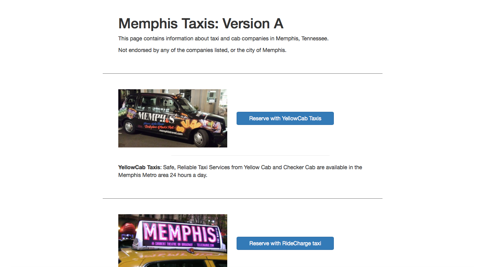

A/B Testing for Memphis Taxi Cabs is a study conducted as part of a
UI/UX class exploring A/B Testing as one method of measuring and
improving user experience.
*Note: The link below takes you to the page used in this study.
You'll be shown either version A or B randomly. The taxi pages linked
to from the initial landing page are not part of this study and
belong to their respective owners.
Context
In web design and development, A/B Testing is often used to
compare the performance of and potentially decide between two
versions of a webpage. When visiting the page, users are shown
one of two versions at random, and various metrics (such
as click rate) are recorded and analyzed to determine which
of the two versions performed better.
For this study, my goal was to create two versions of a
simple homepage for Memphis Taxi Cabs, a company that advertises
several different options for taxi services, and to subsequently
conduct A/B Testing to see if and how small differences in website
layout and content affect user actions and responses.
Tools
HTML
CSS
Heroku (Hosting)
Excel (Analysis)
Design & Hypotheses
I started off by considering what assumptions I wanted to test and
how I could implement differences between the two versions to test them.
The differences had to be distinct enough to increase the likelihood
of having a statistically significant difference in the metrics/results,
yet simple enough that I could pinpoint what specific set of
changes were responsible for the difference in results.
I ultimately chose the following set of changes to test how
website layout and content affects user engagement:
Vertical vs Horizontal Layout
Bolded Keywords
Call-to-action button colors (Blue vs Green)
Strength of call-to-action button statements
Version A

Version B
Null Hypotheses:
Click rate: The click through rate on Version A will be equal to the click through rate on Version B.
Time to click: The time to click on Version A will be equal to the click through rate on Version B.
Dwell time: The dwell time on Version A will be equal to the click through rate on Version B.
Return rate: The return rate on Version A will be equal to the click through rate on Version B.
Alternate Hypotheses
Click rate: The click through rate on Version B will be greater than the click through rate on Version A, since Version B has green buttons, which is more enticing (since “Go” is associated with green), encouraging the user to click through faster.
Time to click: The average time to click for Version B will be faster / smaller than for Version A, since all four taxi types can be seen with less or no scrolling (depending on screen size) and keywords are bolded, allowing the user to more quickly find what they need.
Dwell time: The dwell time will be longer for Version B than for Version A, since the bolded keywords will likely make it easier for users to decide on a taxi service the first time without having to browse through all of them (by constantly coming back).
Return rate: The return rate will be lower for Version B than for Version A, since bolded keywords and overall formatting will increase the likelihood that the user finds what they need the first time.
Data Collection & Results
To measure results, I set up my webpage so that Version A and Version B had equal likelihood of being shown to a visitor to the page and hosted it on a Heroku server. I then set up data collection so that all of the heroku logs would be recorded and consolidated into a text file. The actual data collection was done in our UI/UX class, in which my classmates and I put ourselves in the shoes of those looking to hail a taxi while visiting each others' pages.
Metric Computations
Once I collected enough data for both pages, I imported the data into an excel spreadsheet, set up some formulas, and got to work calculating the metrics and statistics.
The results of my metric computations were as follows:
Statistical Test Choices:
Having finished all of my metrics calculations, my next step was to calculate the statistical significance of the differences found.
For the click rate, I chose the chi-squared test, because the data was discrete (clicked or didn’t click).
For the time to click, I chose the t-test, because the data consists of measurements of time, which is continuous, and because the null hypothesis I was testing consists of means.
For the dwell time, I chose the t-test, because the data consists of measurements of time, which is continuous, and because the null hypothesis I was testing consists of means.
For the return rate, I chose the chi-squared test, because the data was discrete (returned or didn’t return).
Statistical Computations:
Click rate: X2 = 0.3058 < 3.84, so p > 0.05. This means that the results were not statistically significant, so we fail to reject the null hypothesis.
Time to click: abs(t) = 1.1085 < 1.714, so p > 0.05. This means that the results were not statistically significant, so we fail to reject the null hypothesis.
Dwell time: abs(t) = 1.8315 > 1.7247, so p < 0.05. This means that the results were statistically significant, so we reject the null hypothesis.
Return rate: X2 = 1.0785 < 3.84, so p > 0.05. This means that the results were not statistically significant, so we fail to reject the null hypothesis.
Based on the data analysis from A/B testing, version B led to a longer dwell time (shown to be statistically significant by the t-test), which meant that the user found the external link to be relevant.
Conclusion
Although Version B did turn out to perform better than version A, I was really surprised by the fact that the differences in layout and content between the two versions didn't make that much of a difference in terms of the results for most of the metrics.
Thinking over the experiment, it is very likely that the subset of users that participated in the A/B testing was a bit biased (since we were all mostly students working on similar assignments), potentially skewing the results. I would be very interested in seeing whether completing the test again with users who are completely unfamiliar with the details of the particular experiment (as I would when conducting A/B tests outside of a class setting) would lead to a much larger difference in the results.